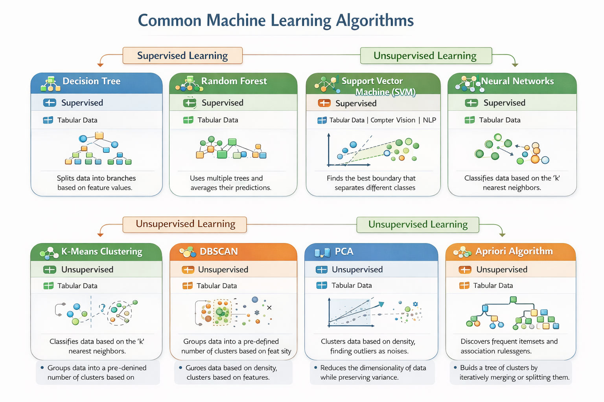

Artifact 1 — Machine Learning Algorithms Visual Framework
Introduction: Machine Learning is an important branch of Artificial Intelligence that enables computers and systems to learn from data, identify patterns, and make decisions without explicit programming. It is widely used in applications such as natural language processing, computer vision, recommendation systems, and predictive analytics.
Description: This artifact is a detailed infographic that presents ten commonly used machine learning algorithms. Each algorithm is categorized according to its type, including supervised learning, unsupervised learning, and reinforcement learning. The visual framework clearly shows the purpose, input-output structure, and use cases for each algorithm.
Objective: The primary goal of this artifact is to provide learners, educators, and professionals with a visual tool that simplifies the understanding of algorithm categories, functionalities, and relationships. It helps users quickly grasp which algorithms are suitable for specific tasks and data types.
Process: To create this artifact, I researched commonly used machine learning algorithms, identified their characteristics, and organized them into clear categories. I then designed an infographic layout that presents the algorithms visually, highlighting key features and differences for easier comprehension.
Tools: The creation process involved using ChatGPT for research summaries, online resources for algorithm information, and infographic design tools to visually structure and present the content.
Value Proposition: This visual framework is valuable for students who are learning machine learning, educators designing course materials, and professionals seeking a quick reference for algorithm selection. It provides a concise, visual, and intuitive understanding of complex machine learning concepts.
References: Dr. Eskinder Belete and various academic and online resources on machine learning algorithms.
